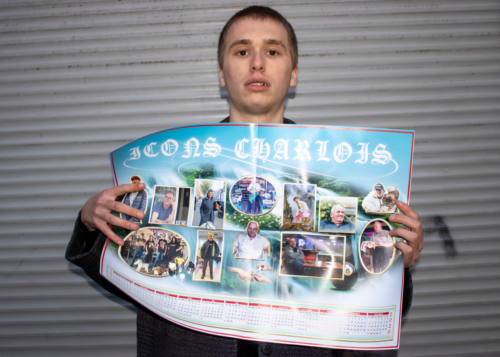
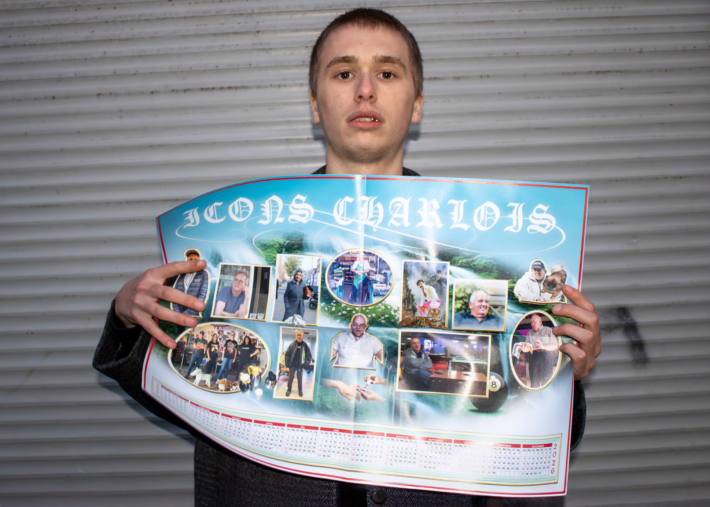
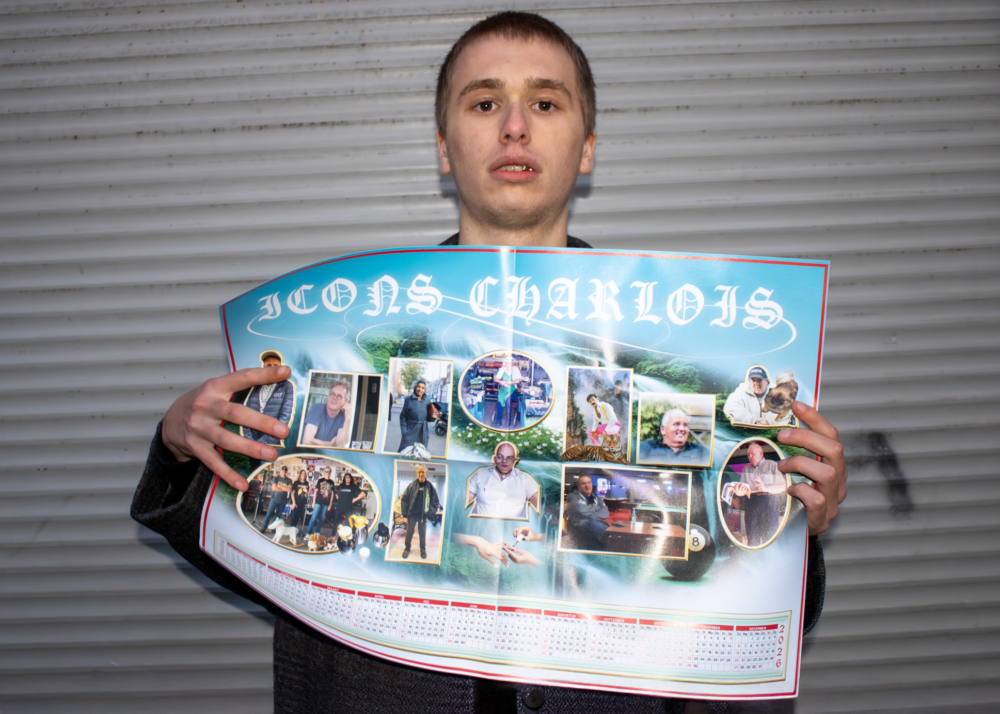

Calendar poster made for the Charlois fashion Week. It features 12 icons, Rotterdam-South locals who serve as inspirations and symbols for Nada van Dalen’s collection. From the top, left to right: René, Gilbert, Angela, Dirk, Kadir, Arjan, Peter, The Hooks, Cihan, Willem. The calendar comes included with the Halte Charlois issue, featuring the inspiration material around the Charlois fashion week.
2D, 3D composition
59 × 42 cm
